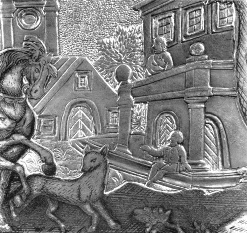
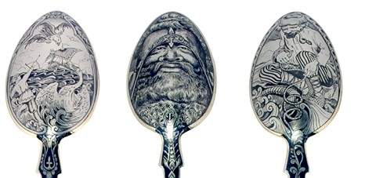
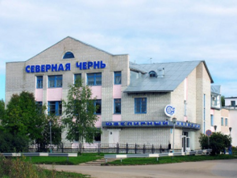

История великоустюжского чернения по серебру
История появления
Промысел этот берет свое начало еще с XVII века. С одной стороны, довольно молодой по историческим меркам, а с другой, отдельные экземпляры могут похвастаться солидным сроком для антикварных изделий. Сложно сказать, с каких именно изделий началась мода на чернение — этот способ украшения встречается, пожалуй, на всех видах серебра: как на ювелирных украшениях, так и на столовом серебре или бытовых вещах (часах, портсигарах и т.д.).
При всем этом чернение как таковое, в Великом Устюге не было изобретено, так как на Руси оно было известно задолго до приобретения известности в этих краях (к XVI-XVII веку). Все дело в особом художественном стиле, реализуемом с помощью чернения, который стал визитной карточкой города на многие сотни лет вперед.
В московских летописях 1744 года довольно прямым текстом пишется о том, что в Москве мастеров подобных как по чернению, так и финифти не имеется, зато много их живет в Великом Устюге. В этом и следующем году ряд мастеров перебирается из Устюга в Москву, закрепляя славу местных ремесленников и искусства серебряного чернения.
М. М. Климшин Серебряная табакерка. Великий Устюг. 1764

Интересный факт
Обладавший практически монополией на производство черненого серебра московский купец Кункин подавал челобитную, чтобы ему выделили двух мастеров из Великого Устюга для обучения (после которого мастеров, справившихся за год, благополучно отпустили домой). Обучение прошло настолько успешно, что с изделиями Кункина не могли конкурировать ни один из московских мастеров. Это дополнительно подтверждает, что на XVIII век лучше, изящнее и качественнее чернения по серебру, чем у мастеров из Великого Устюга или их учеников, попросту не было.
Период расцвета и падение популярности
К XVIII веку — как считается, одной из высших точек достижения мастерства устюжскими ремесленниками, чернение начинает приобретать собственные стилевые ответвления, в том числе и набирающее обороты барокко с его пышными, праздными и витиеватыми изысками. Однако уже к концу века работы становятся все более “спокойными”, приобретая черты классицизма и даже реализма.
Период расцвета всегда сменяет более умеренное время, а тонкий индивидуальный подход не способен выдержать конкуренции с масштабными производствами. Так, с началом XIX века и эры индустриализации работы устюжских мастеров по чернению становятся нишевым продуктом для эстетов и ценителей с развертыванием московских ювелирных фабрик.
Северная чернь
Однако же, с приходом к управлению устюжским заводом “Северная чернь” Шильниковского, возможности современного производства обрели синергию с русскими традициями устюжского чернения. Лучшее от нового и старого, классического и новых прочтений воплощалось в свежих идеях мастеров. 1930-е ознаменовались выходом знаменитых коллекций серебряных изделий по мотивам произведений литературных классиков масштаба Пушкина и Гоголя.
В 1933 году в Великом Устюге М. П. Чирковым основывается артель «Северная чернь». Первоначально в ней изготовляется незатейливый ширпотреб: подстаканники, ложки и т. п., украшенные лишь простым цветочным орнаментом. Однако, начиная с 1936 года, художественным руководителем артели становится Е. П. Шильниковский, сумевший восстановить забытые традиции, а также сделавший и ряд нововведений, одним из которых явилось создание литературных коллекций, основанных на произведениях Пушкина, Гоголя, Крылова.
Под руководством Шильниковского устюгское чернение возрождается и достигает небывалых успехов — в 1937 году на всемирной выставке в Париже великоустюжское чернённое серебро было награждено Большой Серебряной медалью и дипломом (за серию предметов, выполненных по мотивам пушкинских произведений).
Е. П. Шильниковский. Сервиз по сюжетам произведений А.С. Пушкина

Великоустюгский завод «Северная чернь»
